Analysis based on 1425 records from January 01, 2020 to January 16, 2026
Last updated on January 16, 2026
| 5 Days | 15 Days | 50 Days | 200 Days | 1000 Days | |
|---|---|---|---|---|---|
| Start Date | January 09, 2026 | December 26, 2025 | November 06, 2025 | March 27, 2025 | January 06, 2022 |
| Net Return | -9.92% | -15.45% | -25.56% | -4.10% | -73.84% |
| Average Daily Return | -2.067% | -1.112% | -0.588% | -0.021% | -0.134% |
| Median Close Price | 498.05 | 517.55 | 553.75 | 616.05 | 792.55 |
| Lowest Close Price | 462.75 | 462.75 | 462.75 | 434.35 | 422.95 |
| Highest Close Price | 503.85 | 539.70 | 619.70 | 753.70 | 2061.70 |
| Mean Value Traded | 231.33M | 179.05M | 165.66M | 614.03M | 728.61M |
Last close price: 462.75
Average of last 15 days: 513.31
Average of last 50 days: 554.86
Average of last 200 days: 599.54
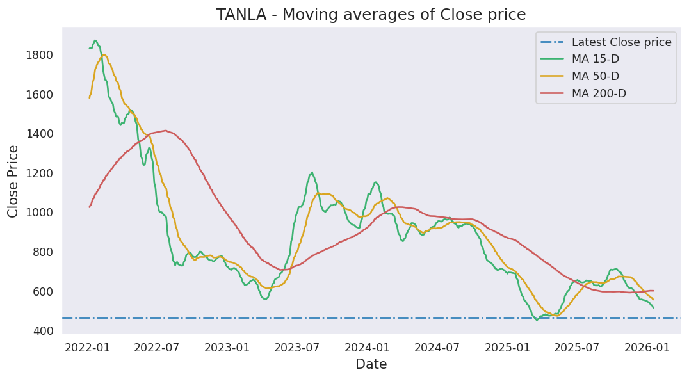
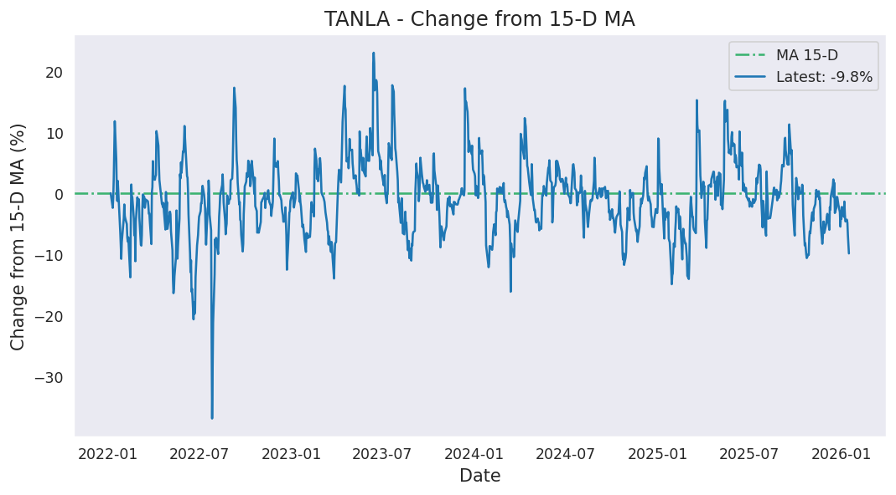
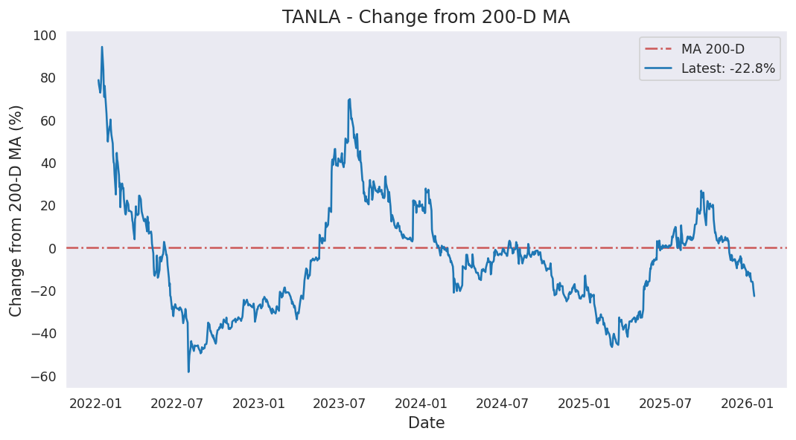
TANLA first closed above its last close price on Friday, November 20, 2020 which was 1883 days ago.
Since then, it has closed over this price 98.8% of times which is 1186 trading days.
Previously, TANLA closed above its last close price on Wednesday, January 14, 2026 which was 2 days ago.
Historically, this stock gave a non-positive return for a maximum period of 1883 days which was from November 20, 2020 to January 16, 2026.
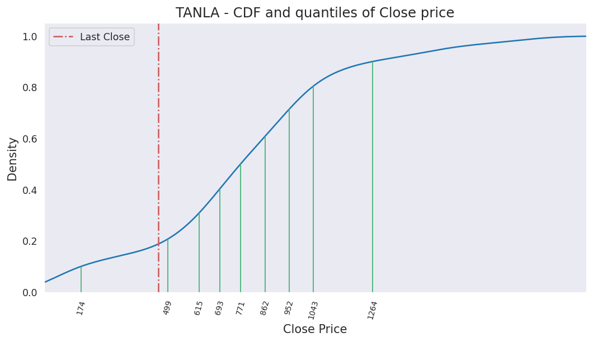
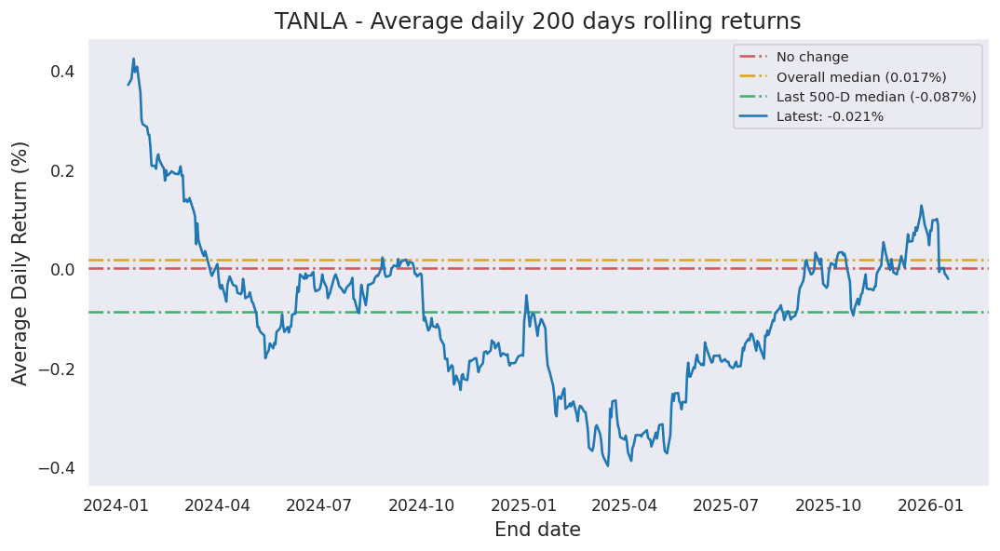
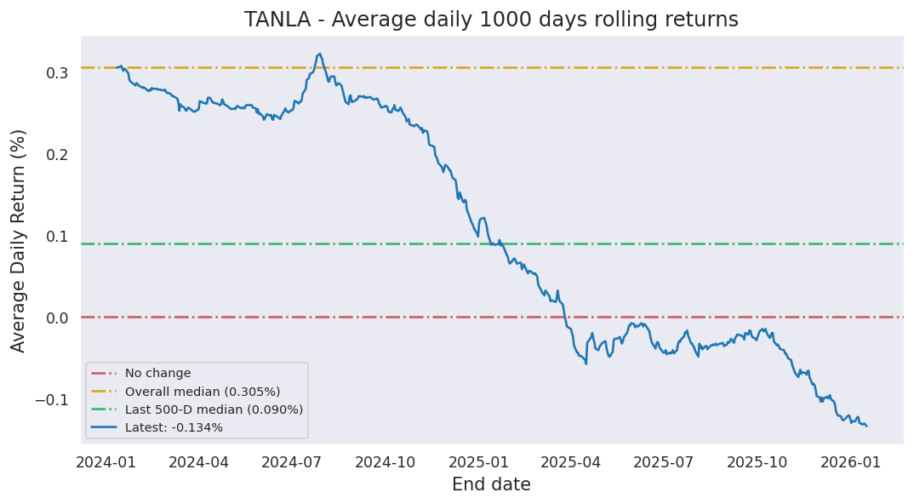
Last candle: Red (-4.27%)
Overall percentage of Red candles: 52.2%
Current streak of Red candles: 6
Net change so far for the current streak: -12.28%
Probability of streak continuing: 33.3%
Longest streak of Red candles: 14 trading days from March 04, 2020 to March 24, 2020
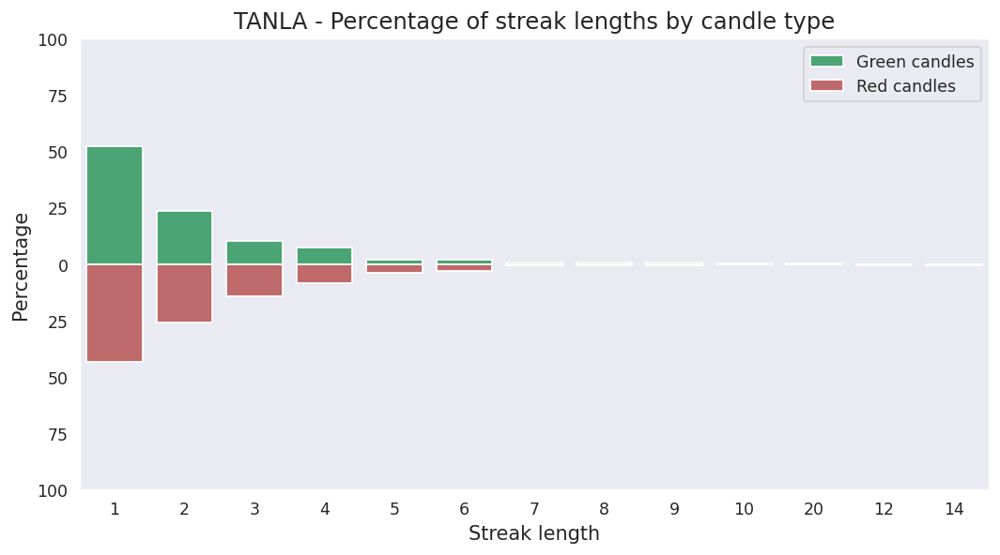
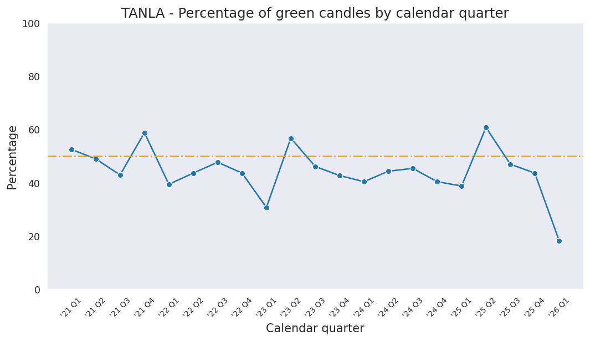
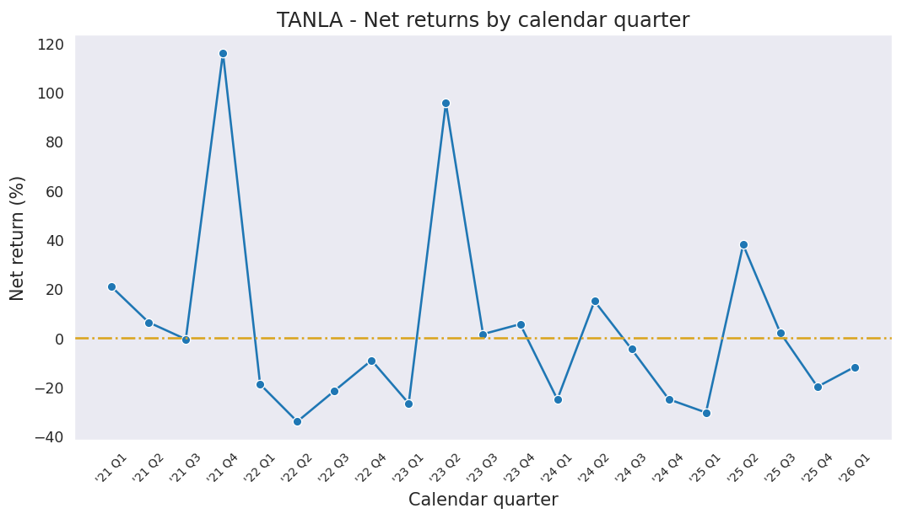
Current down from ATH: -77.55%
Most down from ATH: -79.48%
ATH hits in last 1000 days: 2
ATH was last hit on Friday, January 14, 2022.
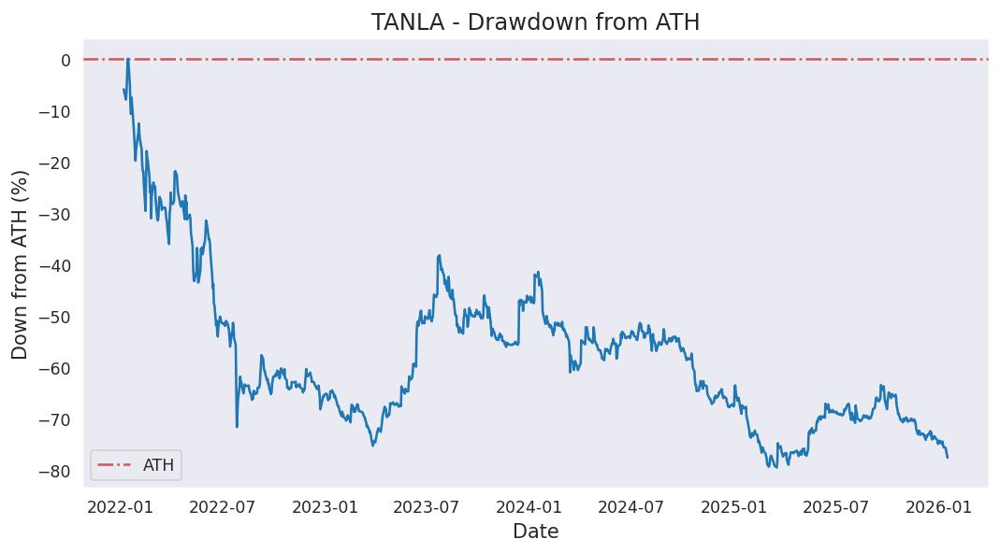
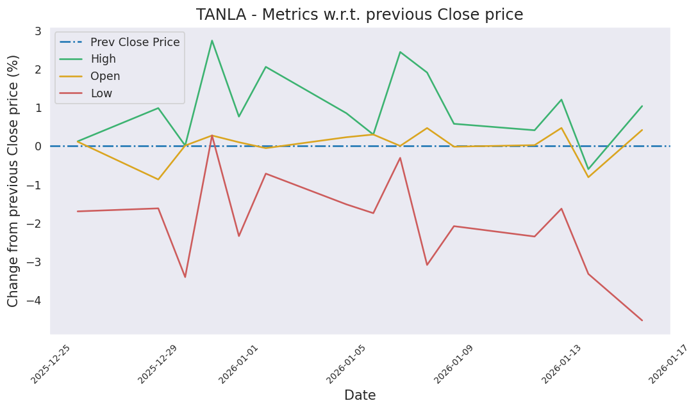
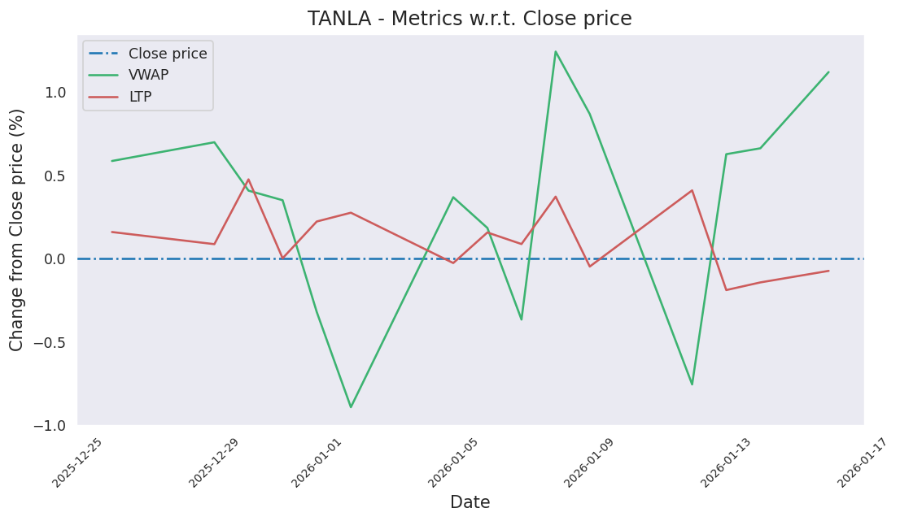
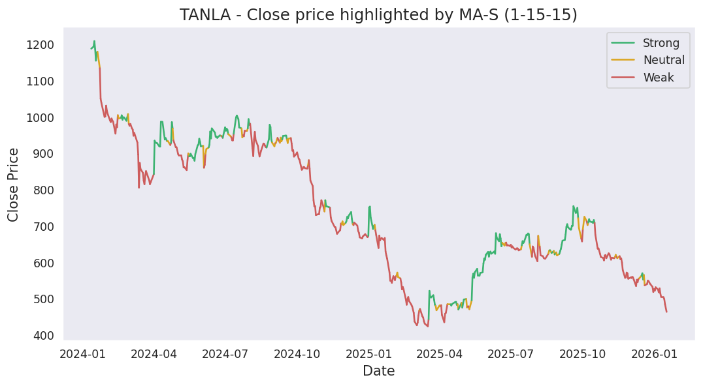
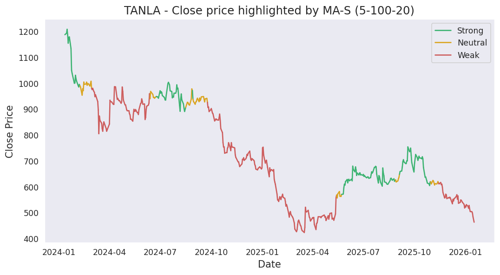